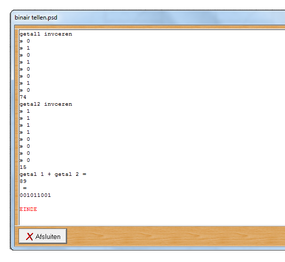

Periode 1 Havo 5
In periode 1 ben ik nog bezig geweest met wat ik in Havo 4 had moeten doen. Dit deed ik omdat ik in Havo 4 niks had geleerd en gemaakt door een slechte docent. Verder heb ik de opdrachten die voor deze periode staan gemaakt. De opdrachten die ik gemaakt heb zijn een rekenmachine in Struktograaf ,een rekemachine in Visual Basic en een binaire rekenmachine in Struktograaf.
Rekenmachine
Ik heb een rekenmachine gemaakt in de programma's Struktograaf en Visual Basic. In Struktograaf voer je twee getallen in en kies je de bewerking (delen, vermenigvuldigen, plus of min) en dan komt het antwoord eronder te staan. In Visual Basic voer je ook twee getallen in en kan je ook een bewerking kiezen. Als je dan op de =-knop klikt dan komt het antwoord in het onderste vakje te staan. Ook komt er een foutmelding als je een letter invoert. En je kan de clear knop gebruiken om alles te wissen. Hieronder kunt u beide reken- machines zien.
Rekenmachine in Struktograaf:
Rekenmachine in Visual Basic:
Binaire rekenmachine
Als laatste in deze periode heb ik een binaire rekenmachine gemaakt in Struktograaf. Dit is gemaakt voor een 2-tallig stelsel, voor 8 bits. Er kan twee keer 8 bits ingevoerd worden. Daarna wordt het omgezet naar decimaal en opgeteld. Ten slotte wordt het herschreven in een binair cijfer.
